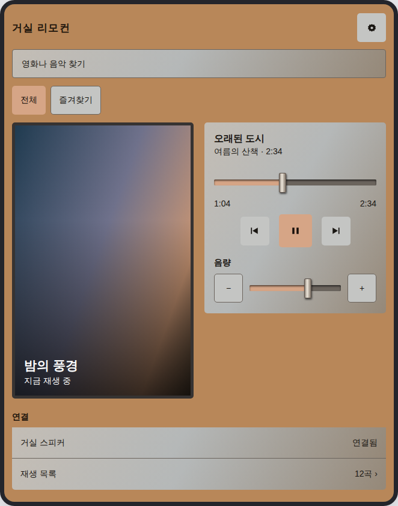

자체 생성 이미지 한 장을 사용한 저장·조회 시험입니다. 사용자 제공 이미지의 스타일 분석 품질을 검증한 결과는 아닙니다.

자체 렌더 · 662×843px · SHA-256 878327be…ca74816f
warm-metal-console
~/.claude/ux-design-master/style-book/
부품 상태·다크 색·실물 원본 일치는 미확인. 이 한 장에서 보이지 않는 규칙을 추정하지 않았습니다.
등록 절차 · 기본 스타일북